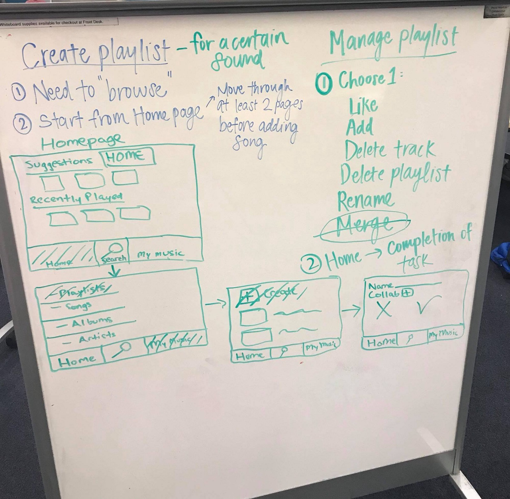
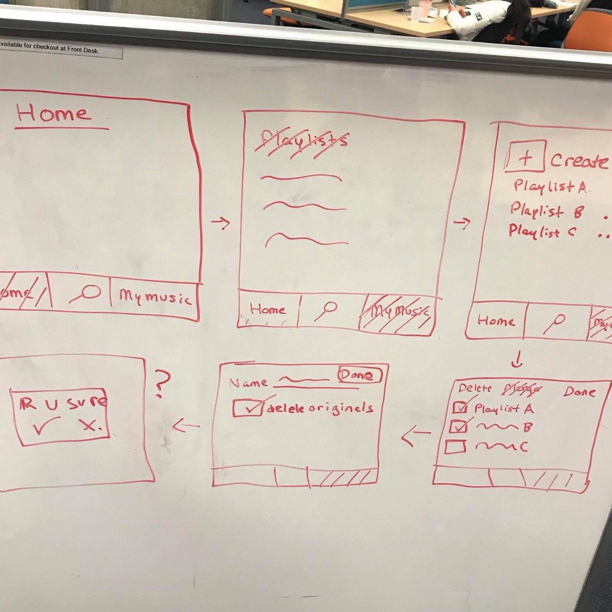
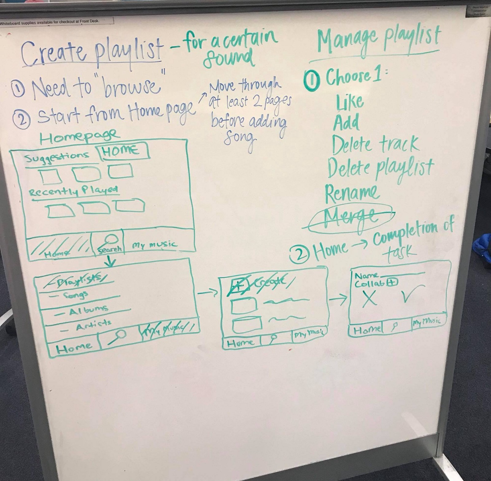
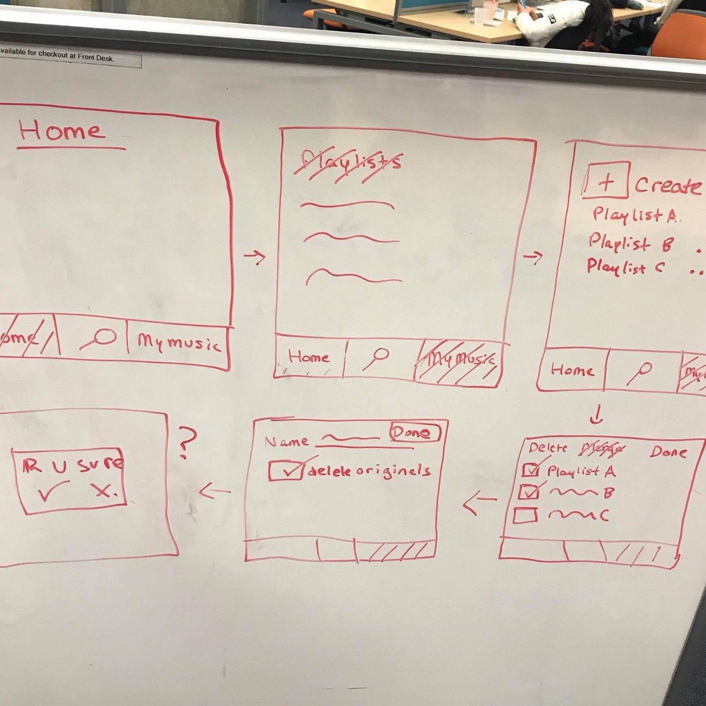
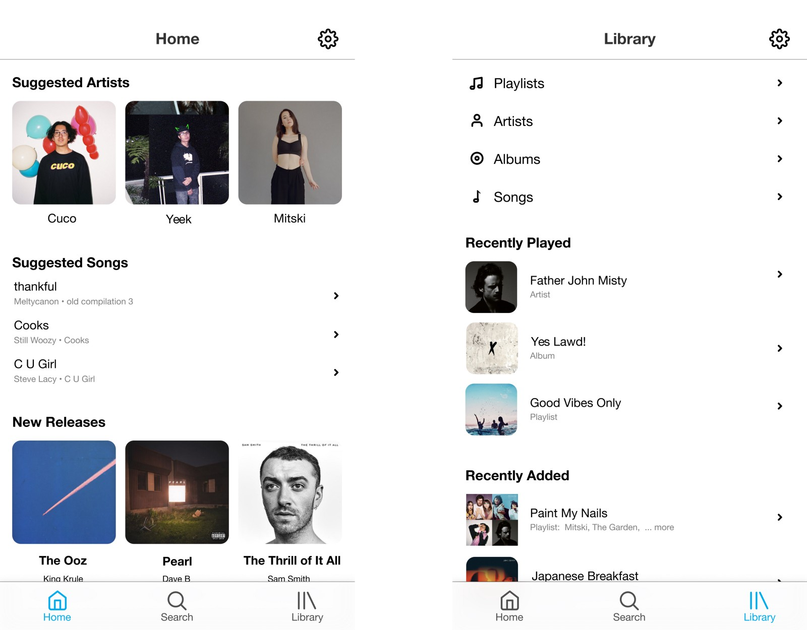
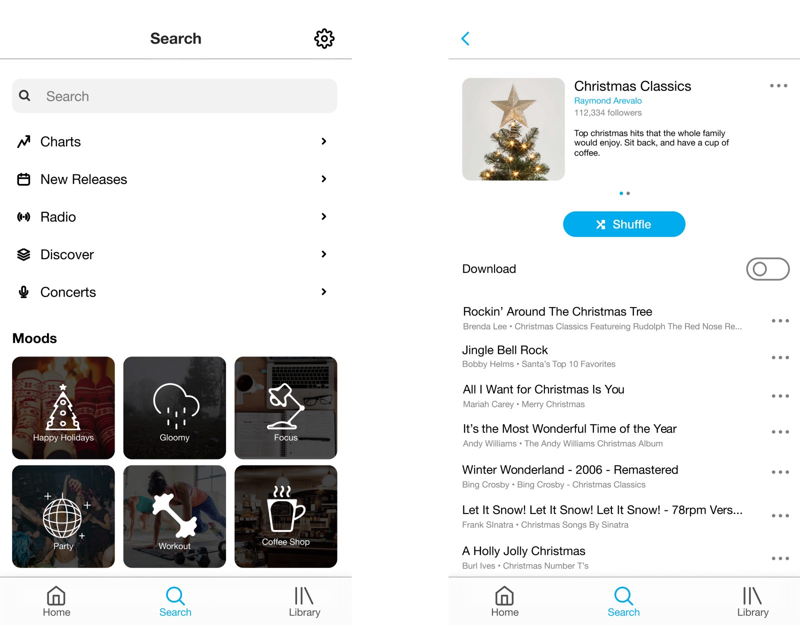

The project is a redesign of the typical music streaming mobile app. Companies used for convention included: Spotify, Apple Music, and SoundCloud. We wanted to design a new app that provides an intuitive way for users to construct, manage, and search for music and playlists. The challenge was that the current information architecture of said apps are organized in a manner that extends the workflow of users to arrive to these destined objectives, like having two ways to search for music in the search and discover sections of the application. Wouldn't it be better to be prompted to new music when you're on the search section of music application?
The project was designed along with 4 other students in COGS 187a, a UX course at UC San Diego. My role in the project was to conduct user interviews, test workflows, complete a competitive analysis of information architecture of major music applications, and create high fidelity prototypes.

Intro
Process
User Testing
To understand the context in which our system would be used, our team conducted 9 interviews on users mainly aged 18-25 who regularly listen to music on their mobile device. We discovered the most used features in music applications - create playlist , search bar, music library, and download playlist - and the least used features - homepage, radio, and browse. Furthermore, we learned that Spotify dominated the market and therefore we decided to use it as a basis of convention. From this analysis, we constructed 10 common scenarios experience when using these applications.
Workflow
To get a better understanding of good and less good user experience and workflow, our team conducted user testing on general scenarios seen in music applications. We watched and captured our interviewees as they ran through a given scenario on different applications, such as Spotify, Apple Music, and Sound Cloud.
What we found that the workflow presented in Spotify's mobile application proved to be overall better. It supplied users with an easier way to make playlists, it hard versatile methods of adding genres to a playlist, had a straightforward process with salient features, simple in creating collaborative experiences, effortless, easy, convenient, and simple. However, Spotify did prove to work worse when creating a playlist for a certain sound. This was due to its lack of centralized tools.
What we found that the workflow presented in Spotify's mobile application proved to be overall better. It supplied users with an easier way to make playlists, it hard versatile methods of adding genres to a playlist, had a straightforward process with salient features, simple in creating collaborative experiences, effortless, easy, convenient, and simple. However, Spotify did prove to work worse when creating a playlist for a certain sound. This was due to its lack of centralized tools.
Competitive Analysis of Information architecture
To get a better understanding of commonly used information architecture in music applications, our team did a competitive analysis of the navigation structures and labels used in Spotify, Apple Music, and Spinrilla.
What we discovered was that search, library, and radio were all prevalent on the first level of hierarchy of all music applications. Additionally, we found that there were at most 3 levels of hierarchy in all navigation structures.
What we discovered was that search, library, and radio were all prevalent on the first level of hierarchy of all music applications. Additionally, we found that there were at most 3 levels of hierarchy in all navigation structures.
Design problem
After completing user research, we reframed our design problem as: "How to provide an intuitive way for users to construct, managed, and search for music and playlists while keeping the same functionalities found in common music applications."
Ideation
After conducting user interviews, comparing workflows, and doing a competitive analysis of information architecture, we began to ideate.
Our first decision was to choose to have 3 main pages instead of the typical 5, which included home, search, and library. Our initial thought was to be conventional and include browse and radio sections which both apple music and spotify have. However, we decided that including those pages would bring more costs than benefits. Our reasoning behind this was that although these sections were in most music apps, said sections were also the least used and most confusing sections when doing user testing on good user experience workflow. 
Our second decision was to have the excluded pages from our main navigation section to be in the search section of our application. Our reasoning behind this decision was to satisfy the design problem. Not only were we able to maintain the functionality of the common mobile music application, but we were also able to provide an intuitive way for users to search for music and playlists. By including the browse and radio sections in the search section, we were able to create two call-to-actions to prompt and help users to further their search.
Other decisions conducted to provide an intuitive way to construct include the following: creating a module-based search results page that provided more information readily available on the immediate page, reorganizing the format of playlists descriptions, inclusion of genre call-to-actions, decluttering the home page to only include minimal sections that were specific catered around their own selections.
Our last hard decision, which aimed at providing an intuitive way to manage playlists, involved merging: where to include it and how to incorporate it. We decided to include a merging feature in our edit playlist section. Since merging was not an available feature in all popular music apps that we analyzed, our initial thought was not clear. Do we include it in the playlists section or do we include it as an option when selecting more on a playlist? However, through further discussion, we decided to include the merging feature in the edit playlists page. Our reasoning behind this was based off the purpose of the edit playlists page. Why have a page to delete playlists when you could delete a playlist by pressing more on that playlist? It was obvious that this page was meant for users to delete multiple playlists at once. Working off this convention, we decided to use the selection feature of this page to either be for deleting or for merging.

Our first decision was to choose to have 3 main pages instead of the typical 5, which included home, search, and library. Our initial thought was to be conventional and include browse and radio sections which both apple music and spotify have. However, we decided that including those pages would bring more costs than benefits. Our reasoning behind this was that although these sections were in most music apps, said sections were also the least used and most confusing sections when doing user testing on good user experience workflow. 
Wireframe of our approach of applying 3 main pages instead of 5
Rising challenge: What to do with the excluded pages?
Our second decision was to have the excluded pages from our main navigation section to be in the search section of our application. Our reasoning behind this decision was to satisfy the design problem. Not only were we able to maintain the functionality of the common mobile music application, but we were also able to provide an intuitive way for users to search for music and playlists. By including the browse and radio sections in the search section, we were able to create two call-to-actions to prompt and help users to further their search.
Other decisions conducted to provide an intuitive way to construct include the following: creating a module-based search results page that provided more information readily available on the immediate page, reorganizing the format of playlists descriptions, inclusion of genre call-to-actions, decluttering the home page to only include minimal sections that were specific catered around their own selections.
Our last hard decision, which aimed at providing an intuitive way to manage playlists, involved merging: where to include it and how to incorporate it. We decided to include a merging feature in our edit playlist section. Since merging was not an available feature in all popular music apps that we analyzed, our initial thought was not clear. Do we include it in the playlists section or do we include it as an option when selecting more on a playlist? However, through further discussion, we decided to include the merging feature in the edit playlists page. Our reasoning behind this was based off the purpose of the edit playlists page. Why have a page to delete playlists when you could delete a playlist by pressing more on that playlist? It was obvious that this page was meant for users to delete multiple playlists at once. Working off this convention, we decided to use the selection feature of this page to either be for deleting or for merging.

Wire frame of merging playlist scenario
Conclusion
Prototype
Through many iterations we were able to conclude on the final prototype. As the head UX and UI designer of the group, I used figma to bring the final high res prototype form to life. My team used InVision to add interactivity to the prototype.

Hi-fidelity prototype of home and library pages

Hi-fidelity prototype of search and playlist pages
Lessons learned
Unfortunately we were not able to conduct user interviews and observations to test our design solution. We did not have the time to take further action. If we had more time to complete the project, we would have allocate more resources and effort into testing our prototype so we could iterate to a better design solution.
Final Thoughts
Overall, this project opened me up to a new world. It gave me a better understanding of prototype design. From conducting user interviews to analyzing good workflow, and from competitive analysis of information architecture to prototype redesign, I was able to learn the steps that a user experience researcher does when create good intuitive design.